The player bar sits at the bottom of the window while music plays.
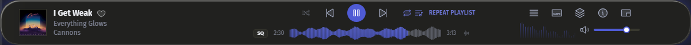
Player bar
•
Click the cover art for Immersive Mode (Ctrl2).
•
Click the heart or stars to rate the song. Choose the style in Settings → General.
•
Click the waveform to jump within the song. beside it switches to frequency bands: blue for bass, amber for mids, white for highs.
•
Shuffle cycles through Off, All and:
– Inside Album: albums in order, tracks shuffled within each.
– Albums: albums shuffled, tracks in order.
– Artists: one artist at a time, artists picked at random.
•
Repeat cycles through Off, Song, Album and Playlist.
•
The buttons on the right open:
the song menu
lyrics
the Queue
the info panel (CtrlI)
the mini player (CtrlM)
•
Media keys and your system's media controls work even when Luminous isn't in front.
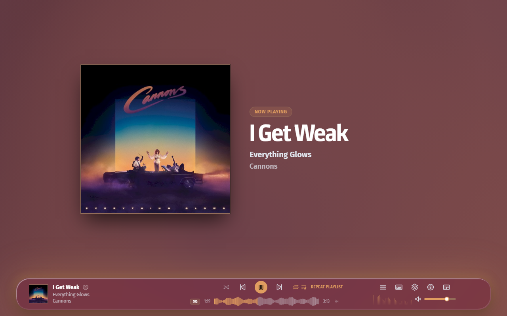
Mini player
•
Hover over the mini player to show its controls and rate the song.
•
Drag along its top edge to move it.
•
Use the lyrics button to switch between the cover and live lyrics.
•
Click Restore Full Window (CtrlM) at the bottom right to go back.
Resting
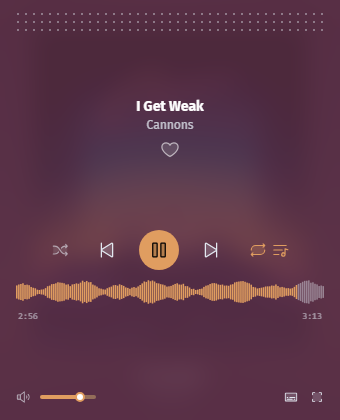
On hover
Basics
Playlists
Playlists come in three kinds:
•
Custom: build it yourself by dragging songs in.
•
Smart: set rules, such as "Genre is Rock and Year is after 2015", and Luminous keeps it up to date.
•
Auto: Genre, Decade and BPM playlists Luminous builds itself, with up to 25 songs refreshed daily. Each appears once 25 songs match. Click Refresh Playlist for a new pick.
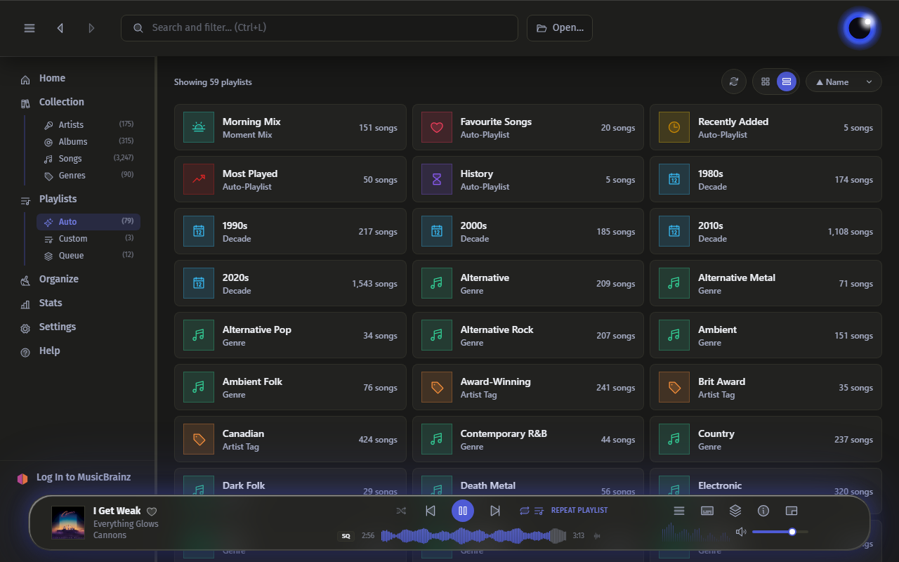
Add songs
•
Click + beside a song or album to add it to the Queue.
•
To add to another playlist instead, click Make Active on it first.
•
Drop files or a folder onto the window to replace the Queue and play. Hold Shift to add them to the end instead.
Smart playlists
•
Click New Smart Playlist, add rules, then name and save it.
•
Use Edit Rules to change them later.
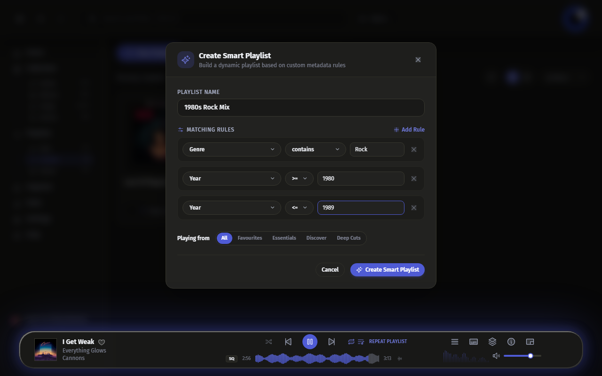
BPM playlists
BPM playlists use each song's BPM tag. Luminous doesn't measure tempo, so songs without a BPM tag aren't included. Make your own ranges with a smart playlist.
Category
BPM range
Down-Tempo BPM
60–90
Mid-Tempo BPM
90–115
Uptempo BPM
115–130
High Energy BPM
130–150
Extreme BPM
150+
Manage a playlist
•
Double-click the name to rename it.
•
Drag rows to reorder. Select several to move them together.
•
Click a column header to sort, or type in the filter box to narrow the list.
•
Use the remove buttons to drop duplicate or unavailable songs, and Clear Playlist to empty it.
•
Right-click a column header to add a Date Added column.
Import & export
•
Import or export .m3u, .m3u8, .pls and .xspf playlists.
•
When exporting, choose Use relative (portable) file paths so the playlist still works in another folder or on another computer.
Basics
Stats
Stats shows your listening, computed on your computer and never sent anywhere.
•
Pick Past 7 Days, Past 28 Days or Past Year.
•
See your top artists, albums, songs and genres. Click one to open it.
•
The heatmap shows minutes listened per day, with your Current streak and Longest streak.
•
Time of Day shows when you listen most.
•
To leave something out, right-click it anywhere and choose Don't Include in Stats.
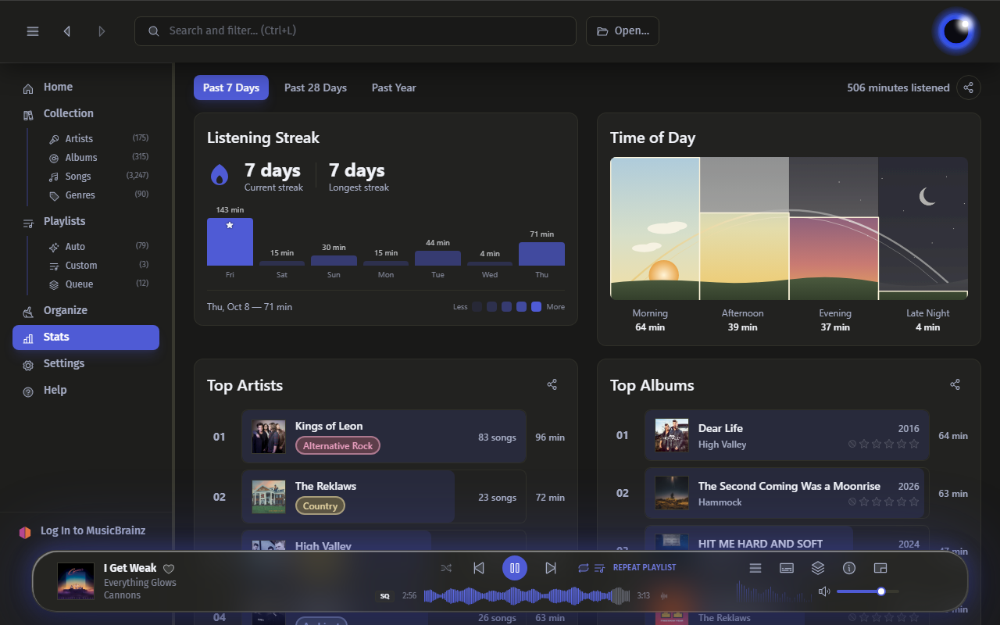
Basics
Lyrics
Turn on Lyrics in the player bar. The current line highlights in time with the music.
•
Click a line to jump to it.
•
Refetch searches for lyrics again.
•
Edit corrects the text or timing.
•
Lyrics without timestamps show as plain text.
•
For an instrumental, choose Mark as Instrumental so Luminous stops searching.
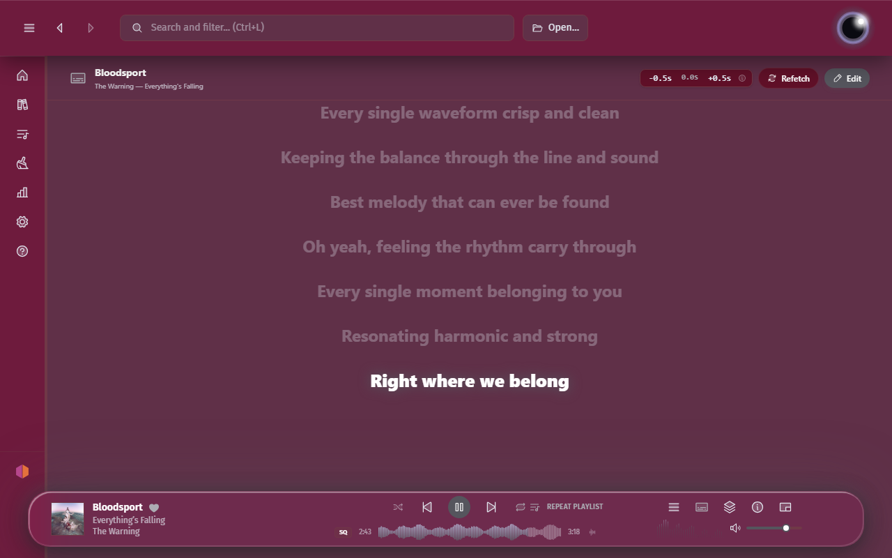
Advanced
Advanced Search
Type field:value terms in the search bar to filter your whole library. For example, genre:rock rating:>=4 finds rock songs rated 4 stars or more.
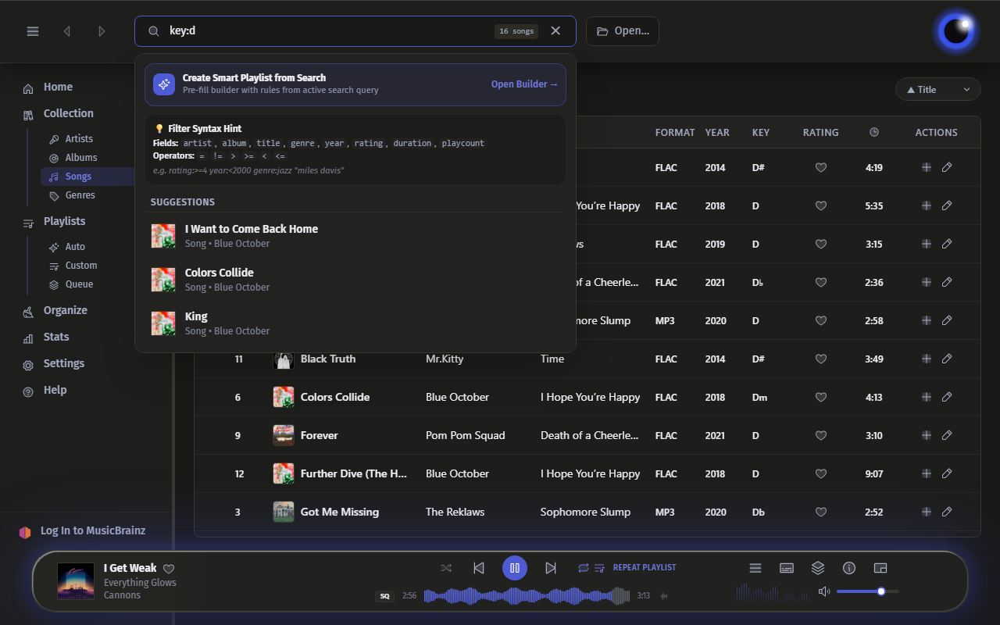
Syntax
•
A text field without an operator means contains: genre:rock matches any genre containing "rock".
•
A number field without an operator means exactly: year:1994 matches only 1994.
•
Several terms must all match: rating:>=4 year:<2000 genre:rock.
•
Words without a colon search title, artist and album: rating:>=4 "tom cochrane".
•
Put values with spaces in quotes: artist:"tom cochrane". Field names ignore case.
Operators
Symbol
Meaning
=
equals
!=
not equal
>
greater than
>=
greater than or equal
<
less than
<=
less than or equal
(none)
contains (text) / equals (numeric)
Fields
Every field works in the search bar and as a smart playlist rule.
Field (aliases)
Type
Matches
artist
text
Artist (falls back to Album Artist)
artist_tag
text
Artist Tag
album_artist
text
Album Artist only
album
text
Album title
title
text
Track title
genre
text
Genre
composer
text
Composer
key / initial_key
text
Musical key (e.g. "D", "Am", "D♭")
bpm
number
Beats per minute
year
number
Release year
originalyear / original_year
number
Original release year (vs. reissue)
rating / stars
number
Star rating, 0–5
playcount / plays
number
Times played
skipcount / skips
number
Times skipped
lastplayed / last_played
number
Last-played timestamp (Unix seconds)
added
number
Date-added timestamp (Unix seconds)
track / track_number
number
Track number
disc / disc_number
number
Disc number
bitrate
number
Bitrate (kbps)
samplerate / sample_rate
number
Sample rate (Hz)
bitdepth / bit_depth
number
Bit depth
channels
number
Channel count
compilation
0/1
Compilation flag
duration / length
duration
Track length — see below
duration takes seconds (duration:>180), MM:SS (duration:>3:30) or H:MM:SS (duration:<1:02:03).
Save a search as a smart playlist
Once your search has a field:value term, click Open Builder → in the dropdown. Each term becomes a rule; add more, name the playlist and save.
Examples
Goal
Query
Rock songs rated 4+ stars from before 2000
rating:>=4 year:<2000 genre:rock
Songs in the key of D
key:d
High-tempo tracks (120–130 BPM)
bpm:>=120 bpm:<=130
Free-text + field mix
rating:>=4 "tom cochrane"
Compilation albums only
compilation:1
Tracks over 3:30
duration:>3:30
Advanced
Advanced Organize
Write your own pattern by choosing Custom on the Organize page.
Pattern variables
Combine these with your own text. Wrap a piece in { } to skip it when the track has no value; end it with / inside the braces to make it a folder.
Variable
Fills in with
%albumartist
The album's primary artist
%artist
The track's artist
%album
Album title
%disc
Disc number
%track
Track number
%title
Track title
%year
Release year
%genre
Genre
%track3
Track number, padded to three digits
%rawtrack
Track number exactly as stored in the tag, no padding
Examples
%disc-%track
2-07
Disc %disc
Disc 2
%year - %album
2019 - Reservoir
{%album/}
Adds an album-name folder, only if the track has one
{%disc-}%track
Skips the "1-" when there's no disc number: 07, or 1-07
{%track }%title
Adds "07 " before the title, only if there's a track number
{%track-}%title
Adds "07-" before the title, only if there's a track number
Settings
General
•
Language / Langue: the language of menus, buttons, messages and this guide.
•
Start the week with: Sunday or Monday, for weekly charts and stats.
•
Song rating style: a heart, 5 stars, or both.
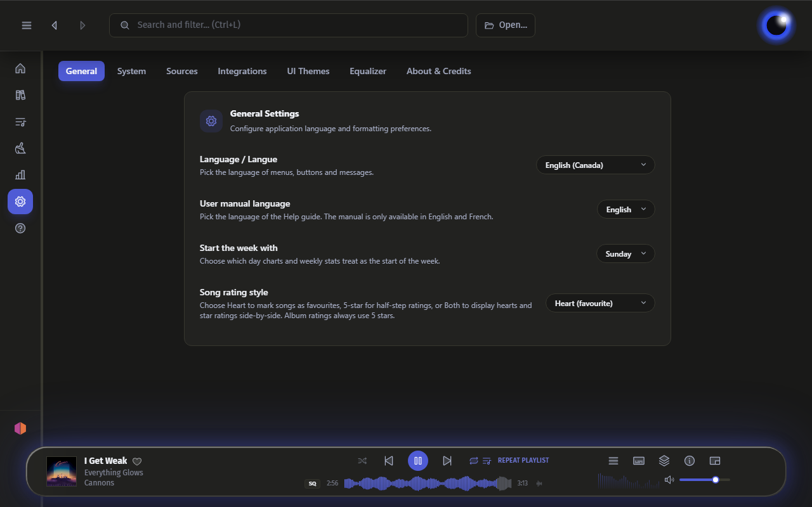
Settings
System
•
Make Luminous the default music player (Windows): open Windows Default Apps to choose which file types Luminous opens.
•
Minimize to tray: closing the window hides Luminous in the tray. Right-click the tray icon for Play/Pause, Next Song and Previous Song.
•
Launch at login: start Luminous when you sign in.
•
Export Diagnostics: save a log file of recent crashes and errors to attach to a bug report.
•
Data Storage Location: where your library database, artwork cache and preferences are kept. The Windows ZIP runs in Portable Mode, keeping everything in a data folder beside the app. Music folders on the same drive follow it when the drive gets a new letter on another computer. On Linux, put an empty file named portable beside the AppImage to do the same.
•
Updates: check for a new version and choose what happens when one is out. Microsoft Store installs update themselves.
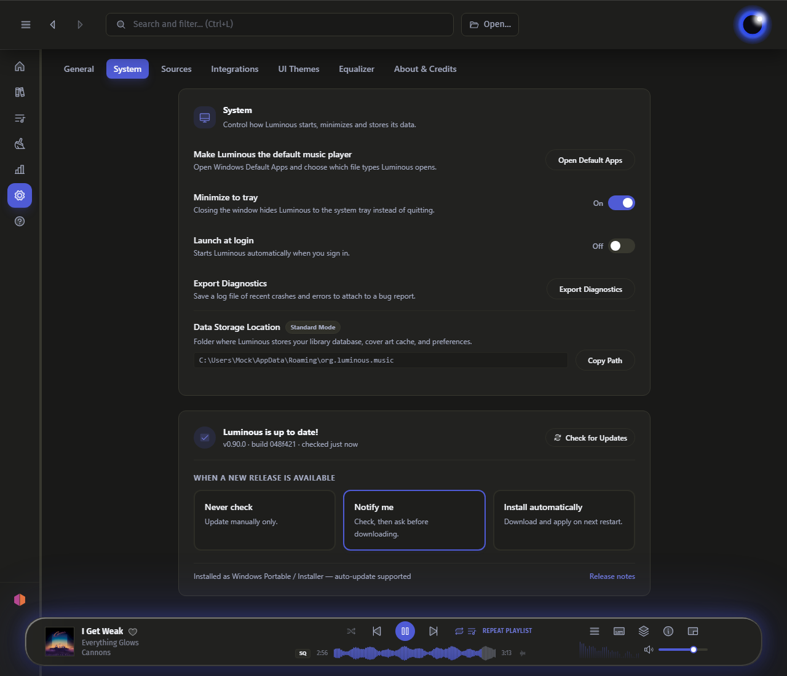
Settings
Sources
Folders
•
Click Add Folder to add a music folder. New and changed files appear on their own.
•
Turn off Real-Time Folder Watching to check for changes only when you rescan.
•
Rescan Library on Startup checks your folders each time Luminous opens.
•
Rescan Library looks for changes; Force Full Re-Scan rereads everything.
•
Save artwork next to your music saves covers as cover.jpg in album folders and artist photos as artist.jpg. Existing folder art is never overwritten.
•
If a folder shows as unavailable because its drive letter changed or you moved the music, click Locate… and choose its new location. Songs keep their play counts, ratings and playlists.
•
To move a folder that's still available, click Edit folder details, then Change Location….
Remote music
•
Remote WebDAV: stream from Nextcloud, ownCloud, Synology and other WebDAV servers.
•
Media Servers: connect an OpenSubsonic server such as Navidrome, Gonic or LMS. Luminous syncs its library and can report your plays back.
•
Remote music is read-only: tag edits and artwork changes stay in Luminous.
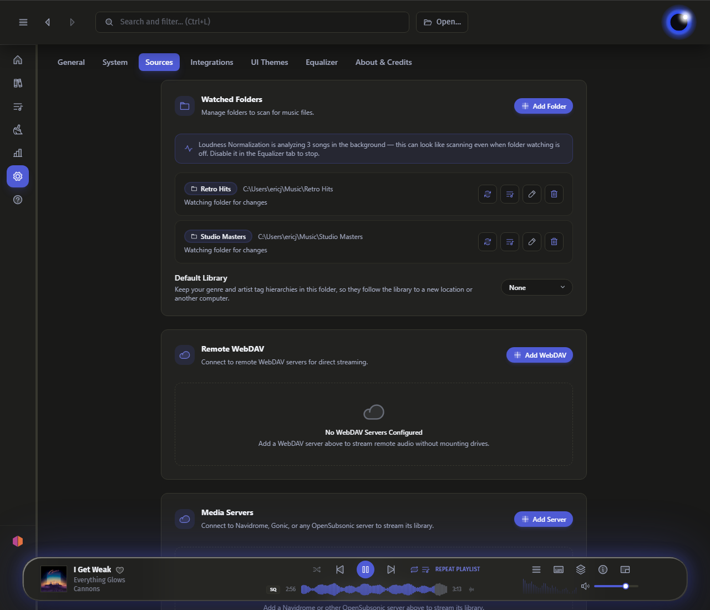
Settings
Integrations
Each integration is optional. Turn any of them off to keep that part of Luminous offline.
•
Online Services: the master switch at the top right. Turn it to Offline and Luminous makes no requests to external services (cover art, lyrics, bios, ListenBrainz, MusicBrainz sign-in, Discord presence and update checks); saved lyrics and art still show, and your Subsonic and WebDAV libraries keep working.
•
ListenBrainz Scrobbler: paste your User Token, click Validate & Save, then turn on scrobbling. Choose whether to also send ratings. Toggle now-playing broadcasts and pause scrobbling from the MusicBrainz profile popup in the sidebar.
•
Pause all scrobbling (in the sidebar profile popup or system tray) stops sending without disconnecting. Listens made offline wait until you click Sync Now.
•
MusicBrainz Picard: Luminous finds Picard or lets you browse to it, so you can open files in Picard.
•
Discord Rich Presence: show what you're playing on Discord. The Discord desktop app must be running.
•
fanart.tv: fetch artist photos and other art Luminous can't find locally. Add your API key and click Validate & Save. Without a key, Luminous uses Wikidata images.
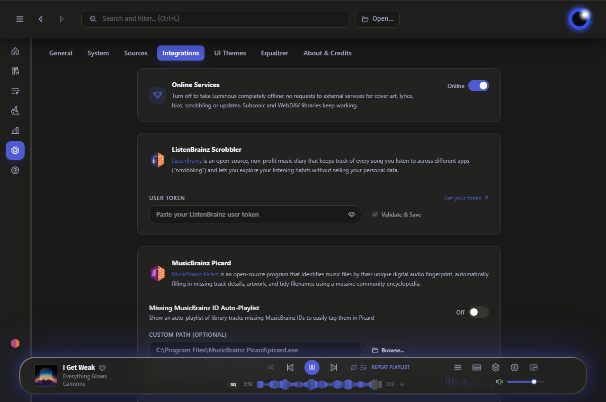
Basics
Organize
Rename and move your files based on their tags. Nothing changes until you click Organize Music.
1
Pick a pattern: Default, Alternative, or Custom to write your own. The tree below previews the result.
2
Choose a destination: the original library folder, or Custom... to pick another.
3
Choose whether to move companion files, replace spaces with underscores, and change accented letters.
4
Check the preview. It lists only the files that will move, with their old and new locations.
5
Click Organize Music.
•
Turn on Auto-organize in the top right (or in Settings → Sources) to rename and move new tracks or tag edits in the background automatically.
•
Clean Up removes missing songs, empty folders and duplicate entries.